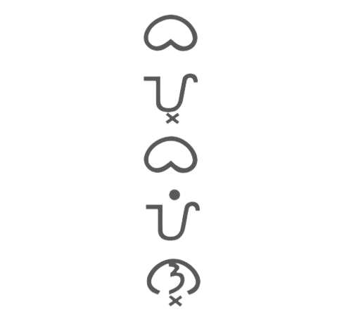
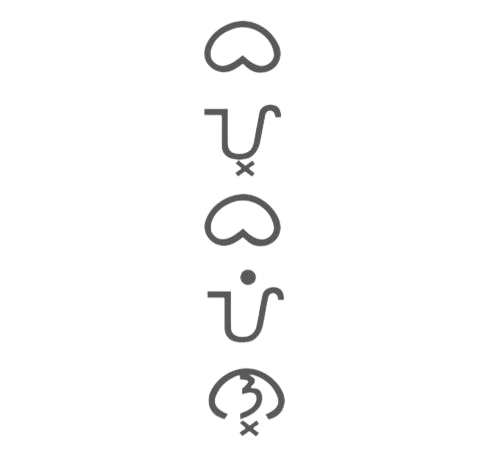

ATING KILALANIN ANG BAYBAYIN
Ano ang tawag sa ating sinaunang sistema ng pagsusulat? Baybayin.
Dahil sa modernisasyon, marami sa atin ang nakalimot na sa Baybayin
kaya nandito ang website na ito para magbigay ng impormasyon o “trivia” tungkol dito.
Read More
PAANO MAG SULAT NG BAYBAYIN
Unang una sa lahat kailangan mong malaman ang mga simbolo para sa
bawat pantig ng alpabeto ng
Baybáyin. Sa tradisyunal na alpabeto ng Baybáyin, mayroon lamang 15 na letra kung saan 3 ang patinig. Ngunit sa
paglipas ng panahon, dinagdagan ito at ginawang mas modernisado
batay sa mga salita at letrang karaniwang ginagamit ngayon.
Read More
 
